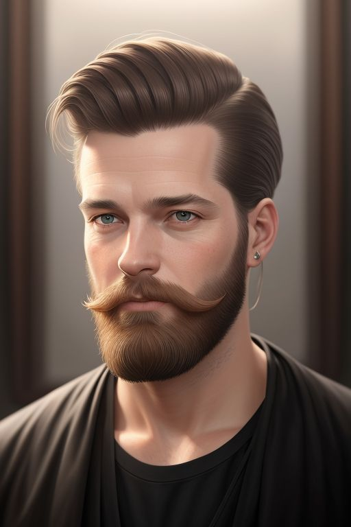

Sophie de Vries
Specialisatie: Haararchitectuur en creatief kleuren.
Als oprichter en hoofdstylist is Sophie al meer dan 15 jaar
actief in het vak.
Haar talent voor het combineren van haarstructuren met innovatieve kleurtechnieken maakt haar de
go-to specialist voor klanten die iets unieks willen.
Haar passie voor creativiteit en techniek komt in elk kapsel terug.

Daan Janssen
Specialisatie: Herenkapsels en baardverzorging
Daan is al ruim 10 jaar dé expert op het gebied van
herenkapsels.
Of het nu gaat om een strak geknipt kapsel of
een volledige baardtransformatie,
hij weet hoe hij de perfecte look creëert voor iedere man.
Zijn precisie en gevoel voor stijl
maken hem onmisbaar in het team.

Leonie van Dam
Specialisatie: Krullend en golvend haar Leonie begrijpt krullen als geen
ander.
Ze heeft zichzelf gespecialiseerd in technieken om de natuurlijke textuur van
krullend haar optimaal tot zijn recht te laten komen.
Of het nu gaat om fijne slag of volumineuze krullen,
Leonie zorgt voor prachtige resultaten.
Emma Visser
Specialisatie: Bruids- en feestkapsels
Met oog voor detail en een flair voor glamour is Emma onze
expert in bruids- en feestkapsels. Of het nu gaat om een
romantisch opgestoken kapsel voor een bruiloft of een chique
look voor een speciale gelegenheid, Emma zorgt ervoor dat
elke klant zich een ster voelt op haar grote dag.